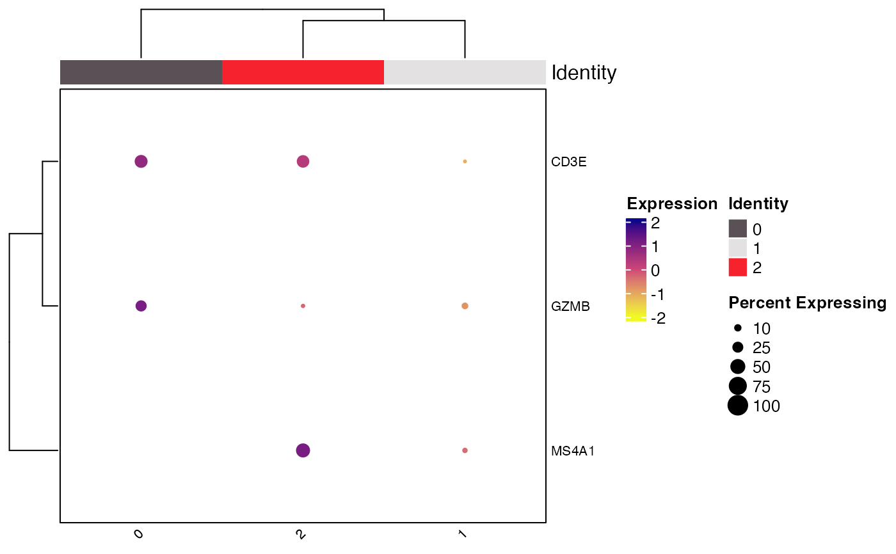
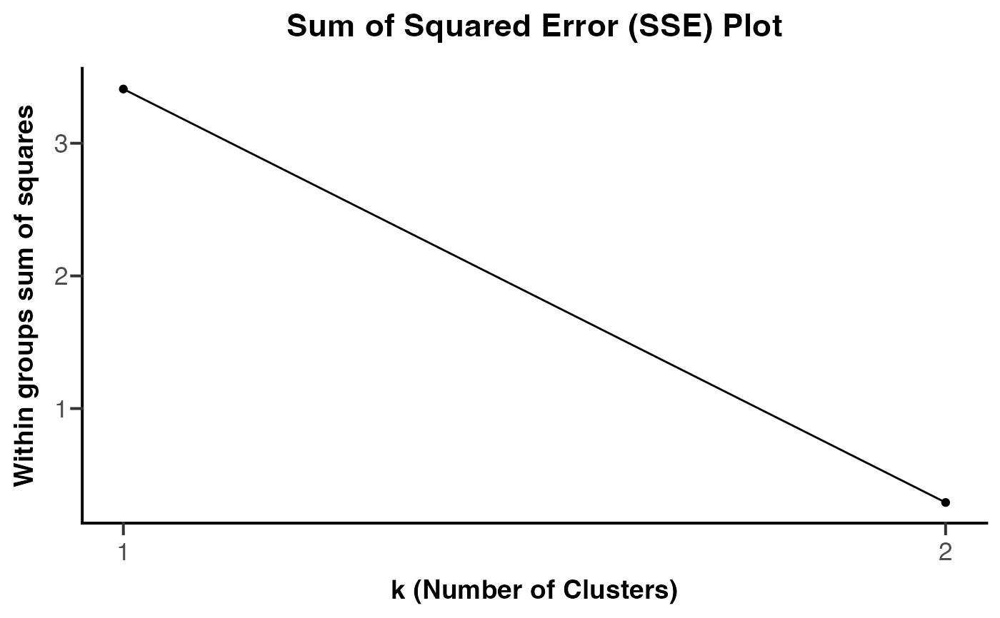
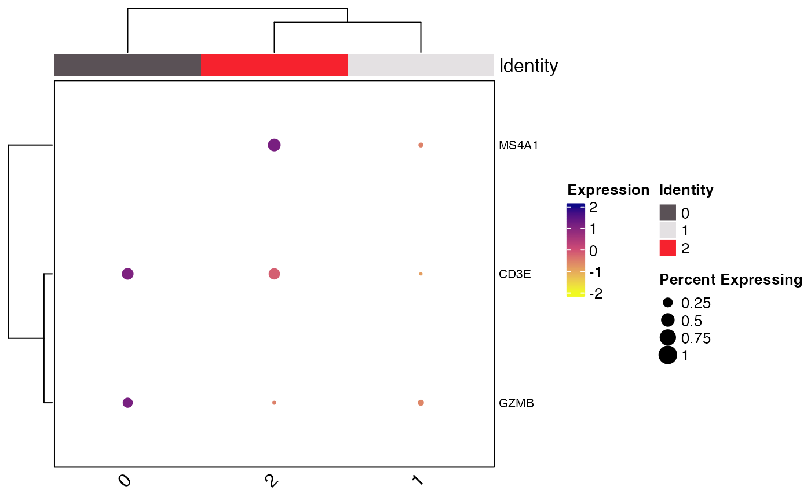

Clustered DotPlots using ComplexHeatmap
Clustered_DotPlot(
seurat_object,
features,
split.by = NULL,
colors_use_exp = viridis_plasma_dark_high,
exp_color_min = -2,
exp_color_middle = NULL,
exp_color_max = 2,
exp_value_type = "scaled",
print_exp_quantiles = FALSE,
colors_use_idents = NULL,
show_ident_colors = TRUE,
x_lab_rotate = TRUE,
plot_padding = NULL,
flip = FALSE,
k = 1,
feature_km_repeats = 1000,
ident_km_repeats = 1000,
row_label_size = 8,
row_label_fontface = "plain",
grid_color = NULL,
cluster_feature = TRUE,
cluster_ident = TRUE,
column_label_size = 8,
legend_label_size = 10,
legend_title_size = 10,
legend_position = "right",
legend_orientation = NULL,
show_ident_legend = TRUE,
show_row_names = TRUE,
show_column_names = TRUE,
column_names_side = "bottom",
row_names_side = "right",
raster = FALSE,
plot_km_elbow = TRUE,
elbow_kmax = NULL,
assay = NULL,
group.by = NULL,
idents = NULL,
show_parent_dend_line = TRUE,
ggplot_default_colors = FALSE,
color_seed = 123,
seed = 123
)Seurat object name.
Features to plot.
Variable in @meta.data to split the identities plotted by.
Color palette to use for plotting expression scale. Default is viridis::plasma(n = 20, direction = -1).
Minimum scaled average expression threshold (everything smaller will be set to this). Default is -2.
What scaled expression value to use for the middle of the provided colors_use_exp.
By default will be set to value in middle of exp_color_min and exp_color_max.
Minimum scaled average expression threshold (everything smaller will be set to this). Default is 2.
Whether to plot average normalized expression or
scaled average normalized expression. Only valid when split.by is provided.
Whether to print the quantiles of expression data in addition to plots.
Default is FALSE. NOTE: These values will be altered by choices of exp_color_min and exp_color_min
if there are values below or above those cutoffs, respectively.
specify color palette to used for identity labels. By default if
number of levels plotted is less than or equal to 36 it will use "polychrome" and if greater than 36
will use "varibow" with shuffle = TRUE both from DiscretePalette_scCustomize.
logical, whether to show colors for idents on the column/rows of the plot (default is TRUE).
How to rotate column labels. By default set to TRUE which rotates labels 45 degrees.
If set FALSE rotation is set to 0 degrees. Users can also supply custom angle for text rotation.
if plot needs extra white space padding so no plot or labels are cutoff. The parameter accepts TRUE or numeric vector of length 4. If TRUE padding will be set to c(2, 10, 0 0) (bottom, left, top, right). Can also be customized further with numeric vector of length 4 specifying the amount of padding in millimeters. Default is NULL, no padding.
logical, whether to flip the axes of final plot. Default is FALSE; rows = features and columns = idents.
Value to use for k-means clustering on features Sets (km) parameter in ComplexHeatmap::Heatmap().
From ComplexHeatmap::Heatmap(): Apply k-means clustering on rows. If the value is larger than 1, the
heatmap will be split by rows according to the k-means clustering. For each row slice, hierarchical
clustering is still applied with parameters above.
Number of k-means runs to get a consensus k-means clustering for features.
Note if feature_km_repeats is set to value greater than one, the final number of groups might be
smaller than row_km, but this might mean the original row_km is not a good choice. Default is 1000.
Number of k-means runs to get a consensus k-means clustering. Similar to
feature_km_repeats. Default is 1000.
Size of the feature labels. Provided to row_names_gp in Heatmap call.
Fontface to use for row labels. Provided to row_names_gp in Heatmap call.
color to use for heatmap grid. Default is NULL which "removes" grid by using NA color.
logical, whether to cluster and reorder feature axis. Default is TRUE.
logical, whether to cluster and reorder identity axis. Default is TRUE.
Size of the feature labels. Provided to column_names_gp in Heatmap call.
Size of the legend text labels. Provided to labels_gp in Heatmap legend call.
Size of the legend title text labels. Provided to title_gp in Heatmap legend call.
Location of the plot legend (default is "right").
Orientation of the legend (default is NULL).
logical, whether to show the color legend for idents in plot (default is TRUE).
logical, whether to show row names on plot (default is TRUE).
logical, whether to show column names on plot (default is TRUE).
Should the row names be on the "bottom" or "top" of plot. Default is "bottom".
Should the row names be on the "left" or "right" of plot. Default is "right".
Logical, whether to render in raster format (faster plotting, smaller files). Default is FALSE.
Logical, whether or not to return the Sum Squared Error Elbow Plot for k-means clustering.
Estimating elbow of this plot is one way to determine "optimal" value for k.
Based on: https://stackoverflow.com/a/15376462/15568251.
The maximum value of k to use for plot_km_elbow. Suggest setting larger value so the
true shape of plot can be observed. Value must be 1 less than number of features provided. If NULL parameter
will be set dependent on length of feature list up to elbow_kmax = 20.
Name of assay to use, defaults to the active assay.
Group (color) cells in different ways (for example, orig.ident).
Which classes to include in the plot (default is all).
Logical, Sets parameter of same name in ComplexHeatmap::Heatmap().
From ComplexHeatmap::Heatmap(): When heatmap is split, whether to add a dashed line to mark parent
dendrogram and children dendrograms. Default is TRUE.
logical. If colors_use = NULL, Whether or not to return plot using
default ggplot2 "hue" palette instead of default "polychrome" or "varibow" palettes.
random seed for the "varibow" palette shuffle if colors_use = NULL and number of
groups plotted is greater than 36. Default = 123.
Sets seed for reproducible plotting (ComplexHeatmap plot).
A ComplexHeatmap or if plot_km_elbow = TRUE a list containing ggplot2 object and ComplexHeatmap.
https://divingintogeneticsandgenomics.rbind.io/post/clustered-dotplot-for-single-cell-rnaseq/
# \donttest{
library(Seurat)
Clustered_DotPlot(seurat_object = pbmc_small, features = c("CD3E", "CD8", "GZMB", "MS4A1"))
#> Warning: The following features were omitted as they were not found:
#> ℹ CD8
#> Warning: Scaling data with a low number of groups may produce misleading results

#> [[1]]

#>
#> [[2]]

#>
# }